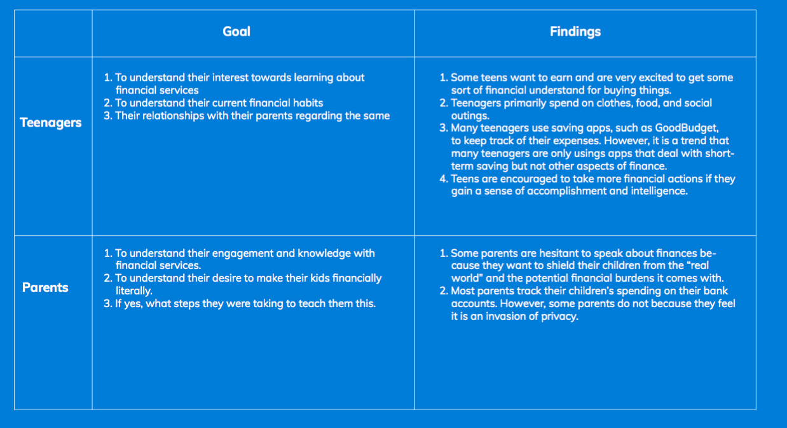
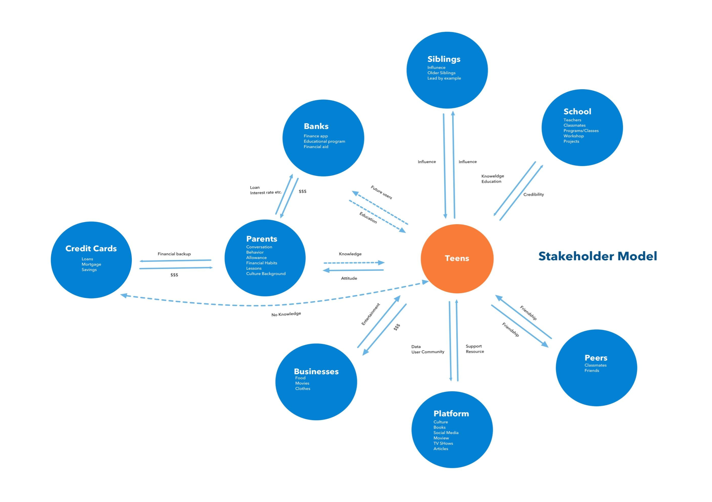
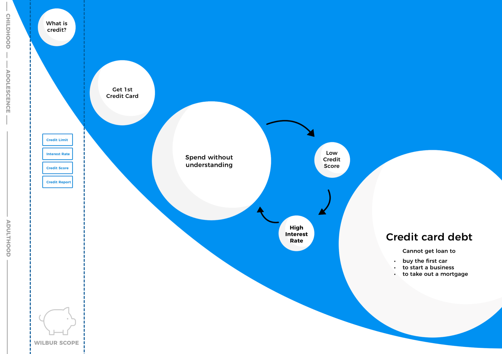
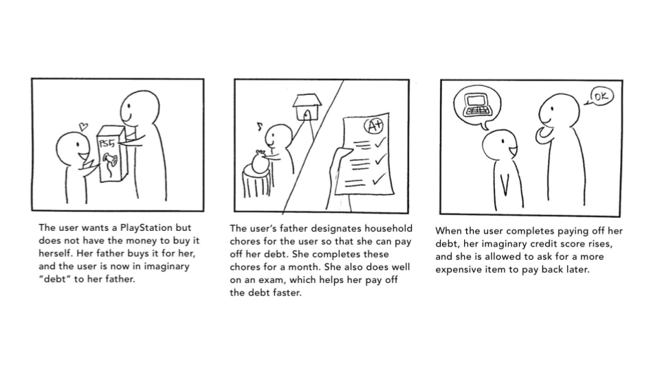
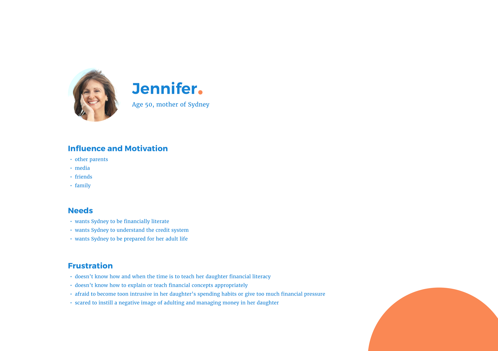
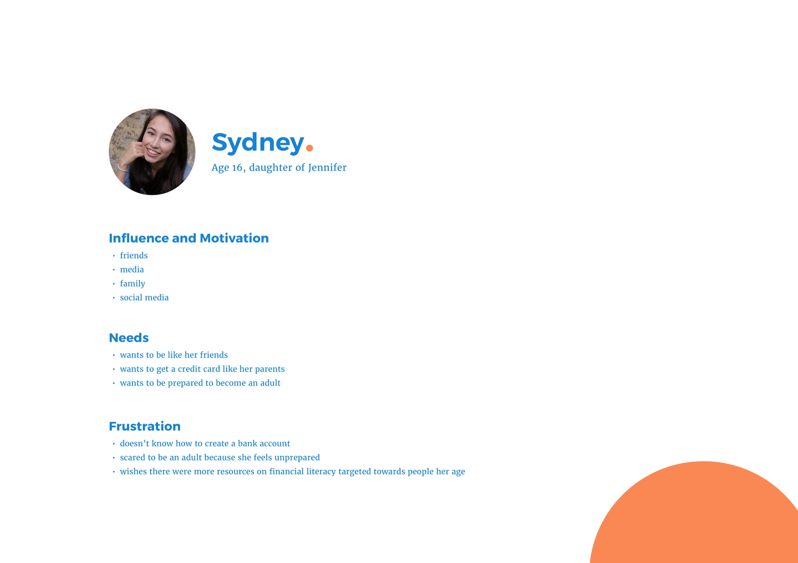

Wilbur was a group final project for a course named Service Design. Along with my four other group members, I was tasked to create a service for PNC Bank that would teach financial literacy skills as well as encourage better teen to parent financial conversations.
Wilbur is a service that helps teens learn financial literacy through virtual credit scores and enhanced financial conversations with their parents.
Through a mobile application, a teen (14-16) loans money from her parents to buy items. The teen can pay back her debt through virtual money earned through parent assigned tasks, such as chores or getting an A on an exam. The teen stores her earnings in a virtual piggy bank and at the end of the month, she will receive a bill from PNC and will pay back the debt she has owed her parents.
Simulating the real world, Wilbur:
We first dove into research in order to understand the severity, scope, and impact of our problem. From financial literacy articles, we were able to gather valuable findings from various financial literacy articles. Some key findings were:
After reading up on articles, we created a set of questions to gauge financial knowledge, such as current financial habits, emotional responses to financial conversations, and familiarity of financial terms. With these questions, we surveyed parents and teenagers.
Taking our research findings forward, we created a stakeholder model to identify all the main players of our problem. Through our model, we worked to tell the story that there is a lack of variety in the realm of financial tools.
We identified three key opportunity areas, ones that our service could focus on improving.
To understand the problem's current effect, we created a current state model on how teenagers earn and spend money.
From here we decided to pivot our direction to target high school freshman and sophomores, ages 14-16. The reasons for choosing this new age group are:
We brainstormed 4 more concepts that were brought to the field for speed dating.
Concept 1: Building credit awareness
Concept 2: VR game of life teaching long term responsibilities, such as mortgage or loans.
Concept 3: Child versus parent game practicing basic financial skills through concepts such as expenses, budgeting, and profit calculation
Concept 4: Community Shark Tank teaching entrepreneurial skills through community support and competition.
We conducted speed dating with 5 parents, 4 high school teens, and 2 financial professionals to validate the need for our concepts.
From our speed dating results, we found that the credit score concept had the most potential and created the most enthusiasm amongst all of our stakeholders.
A few things that were emphasized from our speed dating responses was the:
Throughout this concept, the teen asks her mom to buy her a gift and in return, she completes household chores and other tasks to pay off her "debt." If the teen's debt is paid off in time, her "credit score" goes up and she is allowed to ask for a more expensive gift the next time.
Teens get to buy the items they want, while also feeling that they earned it.
Parents get their children to practice good financial skills as well as engage in meaningful educational discussions with their children.
PNC will gain loyal credit card customers since Wilbur will be a long term use service. Additionally, PNC will gain reliable card holders with good credit scores, which will lead to more loan applications and ultimately, a better bank economy.
Below are Jennifer and Sydney. They are the personas we created that will be portrayed by Kailin and I in our concept video.
 